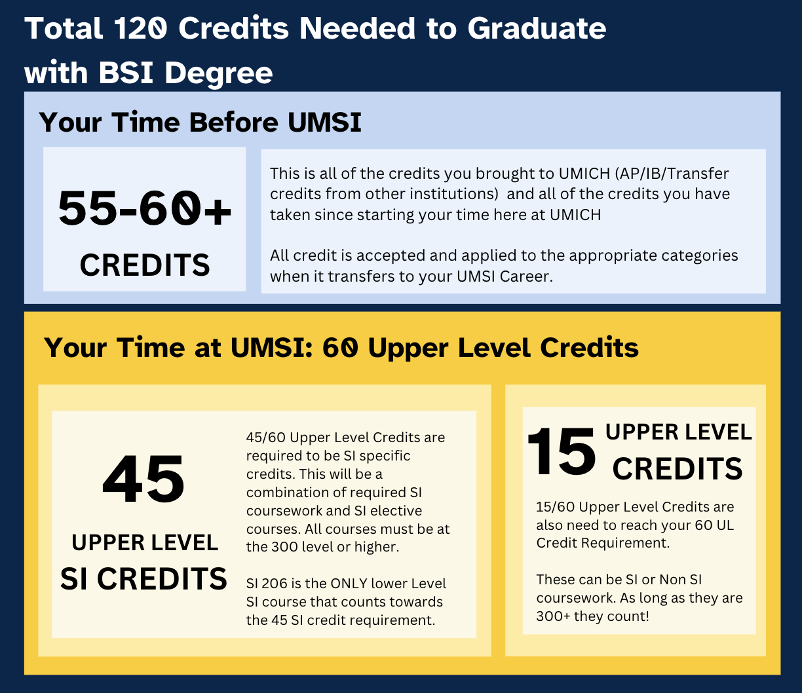

Academic Advising Overview
Welcome to the BSI Academic Advising page. This site offers essential information for students in the Bachelor of Science in Information (BSI) program, including resources for academic advising, academic planning, and student support.
Please note that this site is intended for active BSI students. If you are unable to access documents, please ensure that you are logged into your UMICH account.
What Can Your Academic Advisor Help With?
- Creating a customized academic plan
- Interpreting academic policies and procedures
- Addressing concerns regarding specific courses
- Connecting you with valuable student support resources and services
- Helping you navigate disruptions in your BSI experience
BSI Degree Requirements
The BSI program has specific requirements that guide students toward graduation. These requirements are designed to ensure students acquire the knowledge and skills needed for a successful career in Information Science. For more information, including the detailed degree requirements, please see the official BSI Degree Requirements page.
Meet Your Advisors
Our advising team is dedicated to providing the support you need throughout your BSI journey. Get to know our advisors:
Edwin Oros - New Transfer Advising Intern (he/him/his)
Libby Jones - BSI Academic Advisor (she/her/hers)
Bella Schilling - BSI Academic Advisor (she/her/hers)
Josh Lee - Associate Director of Academic Residential Program (he/him/his)
Connecting with an Advisor
We offer two main types of advising sessions to meet your needs:
Scheduled 1:1 Appointments
These appointments are ideal for students who need more time to discuss complex academic concerns. Available in 30-minute increments, these sessions can be scheduled through Navigate360.
Discussion Topics Include:
- Course planning and graduation timeline
- Academic policies and degree requirements
- Considering or declaring a dual degree or graduate certificate
- Exploring resources available at UMSI and UM
- Concerns about academic progress
Drop-In 1:1 Appointments
Drop-in appointments are for students who need quick answers to more general questions. These are available in a flexible, first-come-first-serve format and can be scheduled via the office hours tool. Each session is designed for students with concerns that can be addressed in 10 minutes or less.
Discussion Topics Include:
- Backpacking and registration
- General UMSI academic policies
- Resources at UMSI and UM
- Degree requirements
- Other general questions